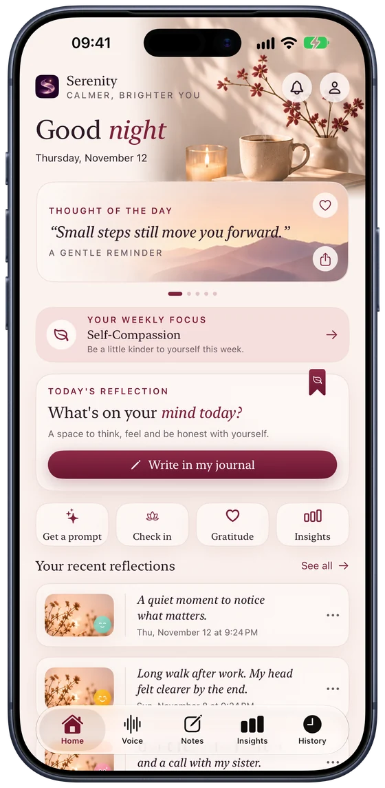
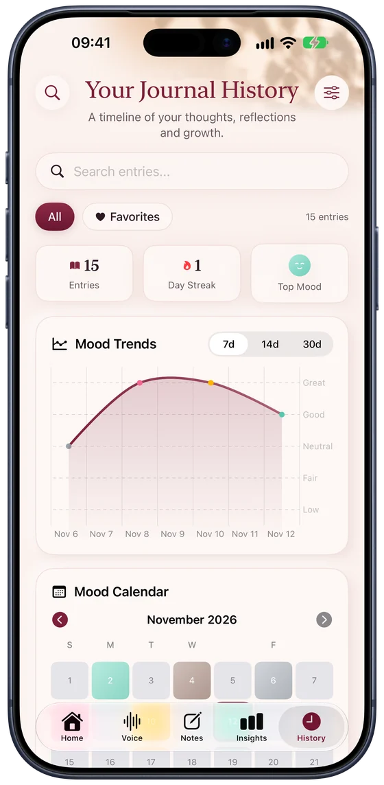
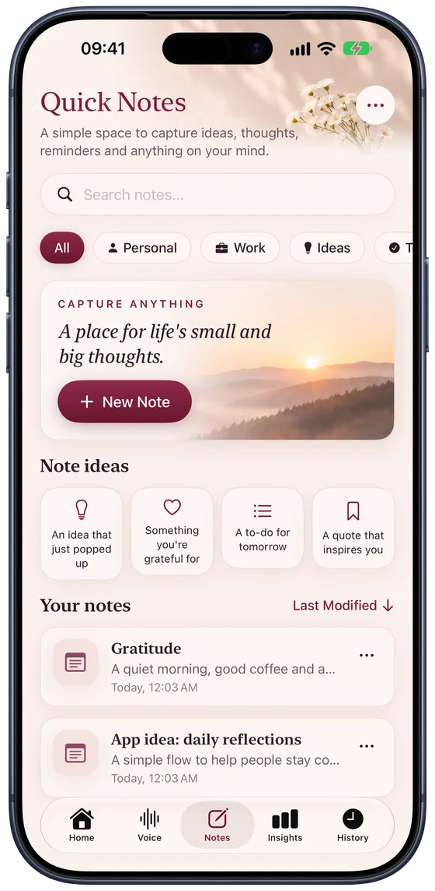

AI mood journal for iPhone
Find peace through
AI-powered reflection
Serenity is an AI mood journal and mental health diary. Transform your thoughts into insights: track moods, build streaks, and discover patterns in your emotional journey with intelligent prompts.
Free to download. Available in 45 languages. iOS 18.0 or later. No account required.

FEATURES
Your personal sanctuary for
mental wellness
AI-Powered Prompts
Get journal prompts based on your mood. Serenity Pro writes them with AI; the free version uses a built-in library.
Mood Tracking
Track 10 different emotional states with beautiful visualizations. See patterns and trends in your emotional journey over time.
Insights & Analytics
Discover patterns in your moods and habits. Track streaks, view trends, and unlock achievements as you journal consistently.
Privacy First
Your journal stays on your iPhone, with an optional Face ID or Touch ID lock. No account required, and your entries are never used for ads.
Offline-First
Journal anywhere, anytime. Writing, moods and insights work offline, and prompts fall back to a built-in library when you have no connection.
Beautiful Design
A calm, soft design that makes journaling feel peaceful.
HOW IT WORKS
Three simple steps to a
daily journaling habit
Choose your mood
Select from 10 emotional states: happy, calm, grateful, excited, neutral, anxious, sad, angry, tired or stressed.
Get a prompt
Receive a journal prompt that fits your current mood, from a built-in library or, with Serenity Pro, written by AI. Thoughtful questions guide deeper reflection.
Write or speak
Journal your thoughts by typing or by voice, with tags and photos. Build streaks and unlock insights about your emotional patterns.
INSIDE THE APP
A calmer way to
see your days


Start your journey to
inner peace today
Find clarity through a few minutes of journaling a day.
No account required. Free to download. Your journal stays on your iPhone.
Serenity is a journaling tool, not medical care and not a substitute for professional help.